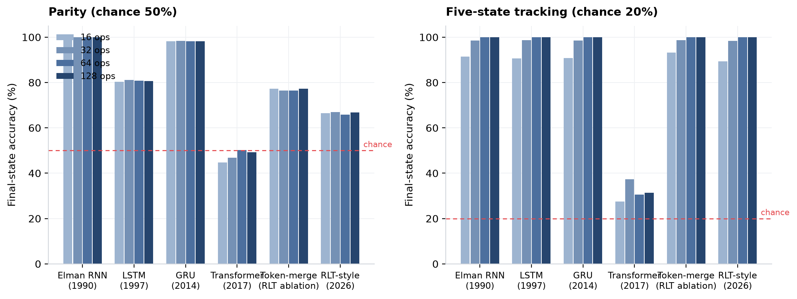
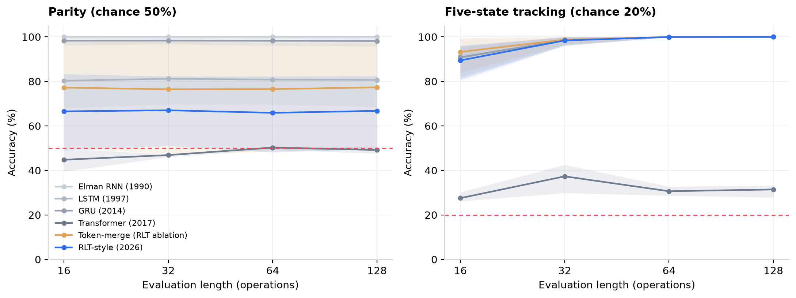
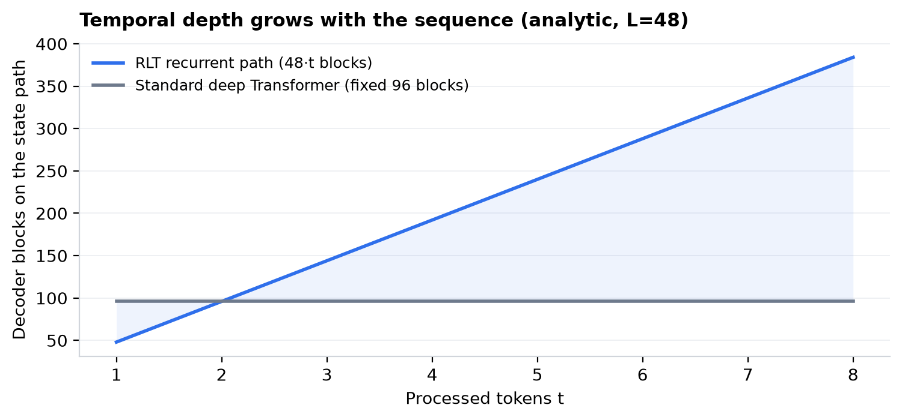
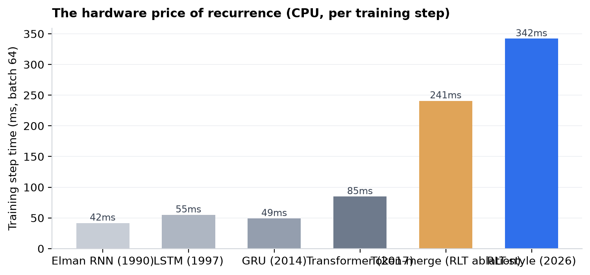

Research dossier · Sept 13, 2026 · independent benchmark included
What the freshly-released, fast-going-viral RLT (Yifan Zhang, Sept 12, 2026) actually is — and how it behaves against six architectures spanning 65 years of sequence modeling, under one matched protocol.
The Recurrent Looped Transformer is a one-line change of philosophy: stop treating a sequence as a wide parallel object, and start treating it as a long-running loop over a small, deep stack.
A standard Transformer reads all T tokens in parallel through a fixed number of layers L — a token at position 1000 touches exactly the same depth as a token at position 10. RLT instead consumes tokens one at a time, and at every step re-runs the entire L-block stack. The computation a token receives is no longer L: it is L · t — depth that grows with the sequence itself, paid in loop iterations instead of parameters.
CLAIM 1 — TEMPORAL DEPTH
Looped re-processing gives each state a recurrent path whose depth scales with sequence length, not a fixed L. The paper shows it beats 48-block deep Transformers and co-trained RNNs on dense-association tasks.
CLAIM 2 — LOOP-FREE INFERENCE
After training, RLT runs as a standard parallel Transformer with frozen blocks — no hidden state to carry. The loop is a training-time curriculum for the weights, not a runtime dependency.
CLAIM 3 — SMALL IS VIABLE
Trained to match parameter count (not compute) against deep baselines, small looped models reach long-horizon performance that FLOPs-matched shallow models cannot.
Viral context: released Sept 12, 2026 by Yifan Zhang (NVIDIA, prior work: the NAS/looped line) with code + weights. Reception splits exactly along its claims: people excited about "depth without parameters," skeptics pointing at the training-time cost and the narrowness of the synthetic evidence.
Every entry below is one answer to the same question: how should state flow through time? RLT is the latest answer — recurrence, but with attention-grade hardware instead of a single vector.
Selection: the lineage that leads to RLT. Notable side branches (Hopfield networks, NTMs/DNCs, neural ODEs, Mamba/SSMs) omitted for focus — though note Mamba's selective state-space is the closest linear-time competitor; RLT is distinct in keeping full attention and re-running depth.
RLT has three moving parts. A causal encoder reads the raw prefix in parallel and maintains a global memory bank of key/value states (one per decoder layer). A looped decoder processes one token at a time; its state st is produced by re-running the full decoder stack:
Each decoder block fuses three information channels: self-attention over the recurrent state, cross-attention into the encoder's global memory (so the state can always look back at raw history without cramming it into one vector), and a position-wise FFN. Finally, a readout head (avg-pooled or learned-query attention) maps the final state to the output — and the whole thing is trained with full BPTT through every loop iteration.
Our scaled-down probe keeps all three: causal encoder + global K/V memory + looped decoder with full BPTT (see the benchmark section for exact dimensions).
Six architectures, each trained from scratch under one matched recipe:
Bar chart below is interactive — pick a task and a context length. A red outline means = chance (the model did not learn the task at that length).


The RLT repo ships a synthetic study contributed by @AradhyeAgarwal: same tasks, ~79K params, 3 seeds, train at 32 ops, eval up to 128. Their setup trains at sparse final-token loss and does not match FLOPs. Ours matches their protocol as closely as CPU allows, with one deviation: dense running-target supervision on parity (sparse final-token parity never left chance for any architecture in 2,500 steps at our scale — see appendix note).

Directionally, our small-scale probe agrees with the paper's central result: at matched parameters, the parallel Transformer fails both state-tracking tasks (chance-level parity, ~31% five-state) while every recurrent/looped model solves them — and the Transformer's deficit is compositional chaining, not capacity.
But the probe also sharpens the story in two ways the paper doesn't stress:

Recurrence is not free: the sequential decoder loop makes RLT ~4.0× slower per training step than the parallel Transformer (342ms vs 85ms, batch 64) and ~8× slower than an Elman RNN at this scale on our 10-core CPU. Full BPTT through every loop iteration is the price of the paper's temporal-depth claim. The paper's counterargument is that its headline comparisons are parameter-matched, not FLOPs-matched — a ~10M RLT against a ~500M deep Transformer.
Also in RLT's favor: inference is loop-free (the trained weights run as a standard parallel Transformer), so the sequential cost is a training-time-only tax. Caveat: all runs executed 6-way parallel on one machine, so absolute milliseconds carry some contention; the ratios are stable across isolated spot-checks.